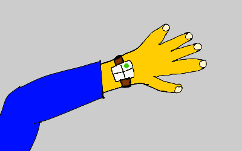

Always Be Strategizing
Every true consultant is a strategy consultant. It’s not a title. It’s a state of mind.
It doesn’t matter whether you’re delivering SEO suggestions for a website to a middle manager, sparring free-form with a Fortune 100 CEO, or providing career coaching to a star individual contributor at a startup. If you’re not participating in shaping the organization’s strategy in some form through your client, you’re not a consultant. You’re merely an ersatz employee, without job security or benefits, to whom some work has been outsourced: a contractor.
Why would you want to participate in strategy?
What is so rewarding about strategy work that you might even want to give up job security and financial rewards to participate in it? Why is even a low-paid consultant sometimes better positioned to participate in strategy than a high-paid senior employee with an impressive executive title? Why might you even want to pick lower-paying gigs over higher-paying ones simply because a strategy component is present? Why does McKinsey fight to hang on to a “strategy” brand, and why do upstart IT firms and design agencies strive to claim a piece of the strategy pie?
Before you get to all those interesting questions, you must first answer a tricky question: how do you even know when you’re doing strategy?
The best answer is: using a curious device known as the strategometer. It looks like a battered wrist watch from the seventies, but instead of a clock dial, it has a blank 2x2 display with no annotations. It does one thing and one thing only: when it senses that you’re really doing strategy, a small crystal in the top-right quadrant lights up green.

I’d estimate there are only a few dozen strategometers left in the world, though it is rumored that there were once thousands in circulation. Nobody knows where they came from, or how they work. Some say the green indicator crystals are actually mystical gems that sense strategic élan vital in the body. That they were once set in neck pendants worn by members of the Order of the Yak. Others claim they were originally crafted by Swiss watchmakers after the Napoleonic wars, for use by political leaders through the century of European realpolitik.
And still others say both those stories are bullshit, and that strategometers are the product of a top-secret Cold War biometrics project, aimed at improving the strategic intuitions of senior military and intelligence officers.
Nobody knows for sure, and the remaining few are so priceless, nobody wants to do a teardown to find out.
The few remaining strategometers are passed on from consultant to consultant. Each one has a name, and an individual secret history that’s part of the consulting lore passed on from one bearer to the next. Some supposedly have legends attached going back hundreds or even thousands of years, which is perhaps evidence in favor of the older origin stories.
Interestingly, it is rumored that only indie consultants may possess one, and that they don’t work if people with paychecks try to use them. One even supposedly exploded in 1994 when a McKinsey partner tried to wear it. I don’t know if this is true, but I’ve heard there’s a McKinsey DarkOps team devoted to tracking down and destroying all remaining strategometers.
The only time I ever saw one was when an old veteran consultant friend of mine, let’s call her the Ancient One, let me try hers on in 2012. This was back when I was starting out. Her strategometer, she said, was known as Kongō Gumi, and was one of the oldest ones, at 1500 years old.
“How does it work?” I asked, strapping it on.
“Do you know the story of the three stonecutters?”
“Uhh… Yeah of course. Consulting 101. Drucker. We all know that story.”
“Tell me.”
“Are you serious?”
“Humor me. It helps the strategometer calibrate.”
“Fine. Well, there’s this guy walking around, and he sees three stone-cutters working. He asks them what they’re doing. The first one says he’s earning a living, the second one says he’s doing the best job of stonecutting in the world, and the third says, with a missionary glow in his eye, ‘I’m building a cathedral’. And the moral of the story is…”
The Ancient One interrupted, “Yeah yeah, the first one is okay, the third one is the true leader, and the middle one is the problem. Let’s skip the moral.”
“Okay…”
“What I want you to tell me is this: assuming they all offered to pay you the same, which one of them would you rather have as a client, and why?”
I stared at her and then thought for a minute. It didn’t seem like a trick question.
“Uhh… the third one I suppose,” I said finally.
“Why?”
“I guess, because there would be an opportunity to work at a strategic level, on an end-to-end vertically integrated cathedral business model.”
The Ancient One smiled. “Is the strategometer green yet?”
I looked. “No,” I said.
“Try again.”
“Well, I suppose the second one wouldn’t actually be that bad to work with. Maybe ‘best stonecutter’ should be understood as best-in-class horizontal player for a component…”
“Go on…”
“And come to think of it, the first guy isn’t that bad either. He’d be the low-cost commodity volume supplier in the market. That’s it, isn’t it? All three are worth working with, depending on what you want to learn.”
I looked down. Still no green. I still wasn’t being strategic enough.
“Here’s a hint,” the Ancient One said, “You’re thinking too grand. Think personal. In terms of your billing models for example.”
I pondered this. “Well, you said they’d all pay the same, but I suppose they’d have different expectations and preferred engagement models. I’d say the first stonecutter would probably want a project-style engagement model with clearly defined deliverables and deadlines, and an upfront ROI estimate. He’d probably talk about bang for the buck. Sounds awful, frankly.”
The Ancient One smiled slightly.
“The second one would get all clever about incentives, and spout profound-sounding BS about skin in the game and ‘measurable value-add’. He’d probably offer a performance bonus based on pre-defined quality tests and speed of delivery. Okay, that all sounds awful too.”
The Ancient One continued to smile and say nothing.
“And the third one… hmm… I suspect he’d be fine with simple hourly billing based on deciding he trusts me, and we’d figure out the what, when, and how as we went along. Yeah, that’s definitely the one. Final answer. I’d work for the third guy.”
“Why…?”
“I suppose because the greater the ambiguity and complexity, the more an over-structured engagement model gets in the way, and the more mutual trust between client and consultant matters. He’d trust me not to pad my hours, I’d trust him to keep things interesting and send enough billable hours my way to make it worthwhile for me.”
“And why is that important?”
Enlightenment dawned.
“A more free-form engagement model means more participation in strategy!”
I glanced at the strategometer. Still no green.
“You’re almost there,” said the Ancient One, encouragingly.
Enlightenment dawned again (if you work in consulting, you must get used to enlightenment dawning multiple times an hour).
“Okay, how’s this. A missionary client navigates by a sense of what’s priceless and is willing to trust the serendipity of a free-form engagement with a consultant they find stimulating, to truly try and get to fresh insight, instead of getting too clever with the bean-counting, expectations structuring, and incentives. They acknowledge the fundamental ambiguity in the situation, and they embrace the uncertainty in the likely outcomes.”
“Boil it down!” said the ancient one, rapping my knuckles with her iPhone.
“They basically bet on the relationship!”
I looked down. The strategometer was glowing green.
The Ancient One smiled, and said, “I’d like that back now please.”
“When I first tried this test 30 years ago,” she remarked, as she strapped it back on, “I got to green by arguing that walking towards the light of a missionary purpose leads to the client casting the strongest shadow. The strongest shadow gives the consultant the most room to work with.”
“That’s fascinating, I’m going to steal that” I said. “A much more psychologically subtle analysis than mine.”
“We were much more into Jung back in the 80s,” she said. “But you did well; very few consultants get to green on the first attempt. And I’ve known veterans who’ve tried dozens of times but never gotten to green.”
“Does anyone ever get to green arguing for the first or second stonecutter?”
“Lemme put it this way. You’re the tenth person to I’ve seen get to green arguing for the third stonecutter. I’ve seen two get there arguing for the first stonecutter. I’ve seen none get there arguing for the second stonecutter…”
“That doesn’t mean it’s impossible though, does it?”
“But it is certainly suggestive, don’t you think? Well anyway, my helicopter is waiting, so I must rush. All the best with your next gig!”
I’m hoping she decides to pass Kongō Gumi on to me when she retires, but it may not be up to her. They say each strategometer chooses its new bearer when the previous bearer retires or dies. I’m not sure how that works. Maybe I’ll get a chance to find out some day.
As you navigate your own consulting career, perhaps one day you’ll run into a veteran wearing an oddly unfashionable watch.
Do a double take.
If it’s a strategometer, try to talk them into letting you try it on. They’ll know how to spar over a suitable parable or case study with you to calibrate your strategic intuition. And they may put you on the shortlist for possibly being the next bearer. Truth be told though, the really experienced ones are so in tune with their own strategic intuitions, they know when the strategometer is glowing green without even looking.
Ironically, or perhaps appropriately, those who bear the few remaining strategometers need them the least.
But realistically, most of us will never own a strategometer. Which means we have to rely on just an inner sense of when we’re genuinely participating in strategy, when we’re participating in some sort of bullshit theater or CYA operation, and when we’re merely playing contractor.
Simplicity in the engagement model — and an hourly billing model is as simple as it gets — often creates the most conducive environment for that to happen. It’s not that other, more complex models can’t get you involved in strategy, but the chances are lowered with every bit of added structure and incentive engineering.
Why would you want to participate in strategy? Is it the status? The money? The claim to a label guaranteed to attract contempt and hostility rather than esteem from many? We will explore the why in a future issue.
But in the meantime, trust me. Whether you charge $25/hour or $25,000/day, and whatever you’re delivering, at whatever client organizational level, you should Always Be Strategizing. And the best way to try and make that happen is to choose somewhat missionary types to work for (when you can choose; because there will always be times when you can’t). With an hourly billing engagement model.
Burn that idea into your brain. You’ll thank me later.